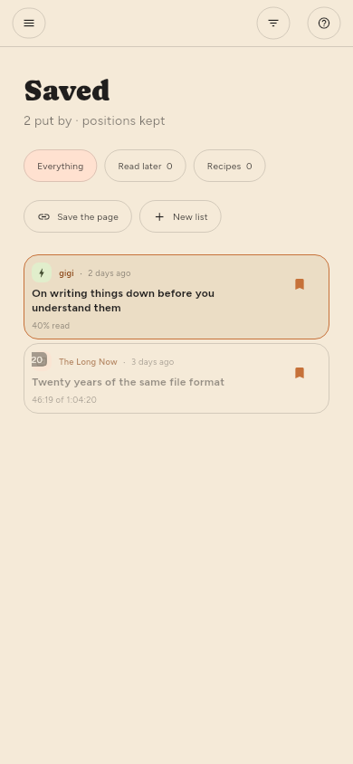

← Finding things · Contents · Managing sources →
Keeping things
Save in the reader, or s from the list. Saved articles are exempt from anything that clears space.
Lists (Premium only)
Saved is one list, and you can make as many more as you like — by subject, by what you mean to do with them, however you file. They live in the shelf on the left, under Lists, with what each holds beside its name.

| To | Do |
|---|---|
| Make one | + on the Lists heading, or New list in the save menu |
| Put something on it | Save files into the list shown filled in the shelf |
| Choose a different list | The ▾ beside Save, a right-click, or press and hold |
| Take it off again | Save again, on the list it is filed under |
| Rename or remove one | Its gear in the shelf, the same as a feed |
Save goes to the list you last chose. Picking a list from the menu files the article and makes that list the one plain saving uses from then on — the shelf shows which by filling in its bookmark. Until you choose otherwise that is Saved, which is what saving has always meant.
An article can be on several lists at once, and taking it off one leaves the others alone. Saved itself cannot be renamed or removed: plain saving has to have somewhere to go, and every device agrees on that one.
Removing a list leaves the articles on it, as long as a feed or another list still holds them — the same rule as removing a feed. Removing a source leaves saved articles alone, and writes down where they came from before the source goes.
Lists travel between your devices, with the articles on them.